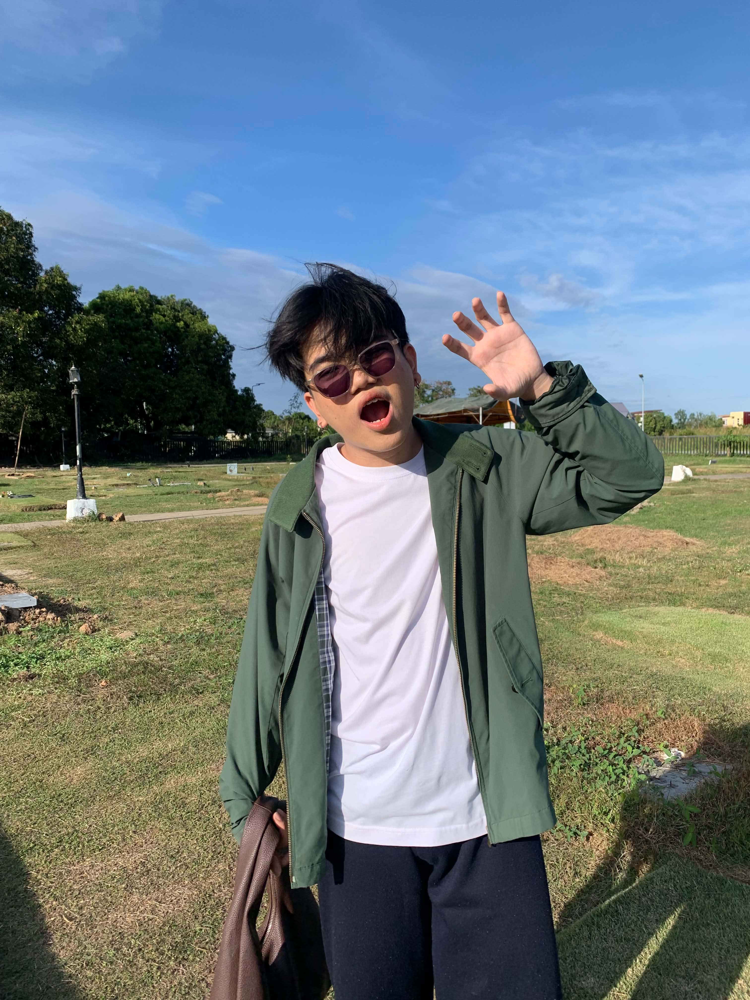

Hello, I'm
Chester Mikhail De Guzman
IT | Data Analyst


Hello, I'm
IT | Data Analyst
Get To Know More


I was in a relationship for five months.

Bachelor of Science in Information Technology
Major in Business Analytics
Magna Cum Laude
Hi Jempot na cute na mahilig sa hirono, I’ve been wanting to properly introduce myself to you—not just the things you can easily see, but the parts of me that matter most.
My full name is Chester Mikhail De Guzman, but you can call me Ches. You can even call me by my second name if you want. It might sound silly, but hearing it from someone special always feels different. I’m 24 now and turning 25 this November. As I grow older, I keep trying to become a better version of myself—not because I think I’m lacking, but because I want to be someone who loves well, someone who is dependable, and someone worthy of the people who choose to stay in my life.
I’m the eldest of four siblings, and a big part of who I am comes from that. Ever since I was young, I’ve carried a sense of responsibility for the people I love. Sometimes it can be exhausting, but I never really complain because seeing my family okay makes everything worth it. They are one of the biggest reasons why I keep pushing forward, even on the days when life feels heavier than usual.
I’m actually a very simple person. I’m a homebody and I find comfort in quiet moments. I don’t drink alcohol, and most of the time, I’m happiest staying in, playing games like Roblox, Valorant, and Grand Chase, watching K-dramas, thrillers, or horror movies, or listening to classical music, Christmas jazz, and Korean OSTs. Maybe that’s why I tend to love deeply—I find beauty in small things, in simple moments, and in the feeling of being close to someone.
One of the most important people in my life is my lola. Being close to her taught me how to care for people, how to stay loyal, and how to love with sincerity. Because of her, I learned that love is often found in the little things—in showing up, in remembering details, in making people feel seen. I’m also quite emotional, to be honest. I cry easily, I get attached, and I feel things deeply. Sometimes I wish I could be tougher, but this is who I am. When someone becomes important to me, I don't know how to love halfway. I give my whole heart.
Professionally, life keeps me on my toes. I currently work two jobs—one as a Data Analyst and another as a freelance Project Manager. There are days when I'm juggling meetings, reports, deadlines, and responsibilities from morning until night. It can be exhausting, and sometimes I barely have enough time for myself. But I've always believed that hard work is one of the ways I show love—for my family, for my future, and for the life I'm trying to build.
Maybe that's why when someone becomes important to me, I make a conscious effort to create time for them no matter how busy life gets. Because for me, being present isn't about having all the time in the world—it's about choosing someone even on the days when life feels overwhelming.
I've always been passionate about data and analytics. I studied Business Analytics and now work as a Data Analyst, hoping one day to become a data scientist or data engineer. I genuinely enjoy what I do, especially finding stories hidden behind numbers and making sense of things that seem complicated at first glance.
But if I'm being completely honest, none of those things are what I wanted to tell you the most.
What I really want you to know is that I appreciate you. More than you probably realize.
And I also want to apologize in advance.
Sorry if there will be times when I overthink, become distant, ask too many questions, or need reassurance more than I should. The truth is that I've been through things that left scars on me. Some wounds heal slower than others. I wish I could say that I've completely moved on from every hurt and disappointment I've experienced, but that wouldn't be honest.
I'm still healing.
I try every day to be better than who I was yesterday. I try to unlearn fears that no longer serve me and stop expecting people to hurt me the way others did before. But healing isn't something that happens overnight. There are days when my mind gets too loud and my thoughts start convincing me of things that aren't even true.
I know that can be difficult sometimes, and for that, I'm sorry.
What I can promise you is that I'm trying. I will continue trying.
To be honest, very few people know this, but I want you to understand where I'm coming from. What my ex put me through back in 2023 affected me more deeply than I ever admitted. The pain and trauma became so overwhelming that I had to undergo therapy sessions once a week for three straight months just to cope and slowly piece myself back together. It wasn't just heartbreak—it left emotional wounds that took a long time to heal, and some of those scars are still with me today.
I'm not asking you to fix me or carry my burdens. I just hope that when those moments happen, you can be patient with me. Sometimes all I need is reassurance. A simple reminder that things are okay. A few sincere words can quiet the hundreds of worries inside my head.
I want to become better—not because someone is forcing me to, but because I genuinely want to grow. I don't want my past pains to dictate my future. I don't want my fears to become walls between me and the people I care about.
And if you choose to stay, I hope you'll get to see that version of me.
The version that's learning to trust again.
The version that's learning to love without fear.
The version that's trying every day to become someone worthy of your time, your affection, and your presence.
And hopefully, even if we have little disagreements along the way—even because of my pagiging picky eater, we'll choose to understand each other instead of letting those moments pull us apart. I know I can be stubborn with food, and you might find it funny, frustrating, or both, but I hope it's one of those little things we'll look back on and laugh about someday.
I don't know what the future holds for us, and I don't want to make promises I can't guarantee. But what I can promise is that everything I've shown you has been genuine. My intentions are genuine. My care for you is genuine.
And for someone like me, who feels everything a little too deeply, that means a lot.
Thank you for taking the time to know me, Ly kahit sa maikling time pa lang. And thank you for being someone who has made my heart feel excited, hopeful, and soft again.
Explore My
Browse My


Get in Touch